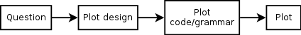
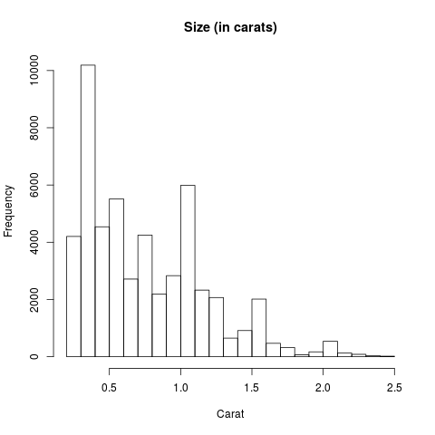
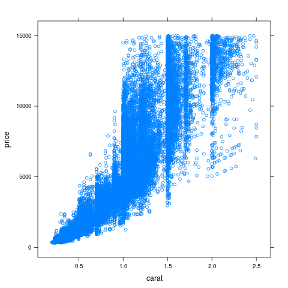
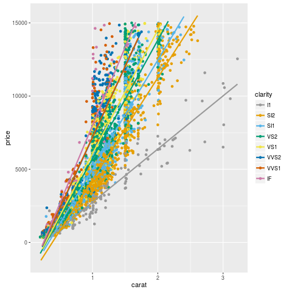
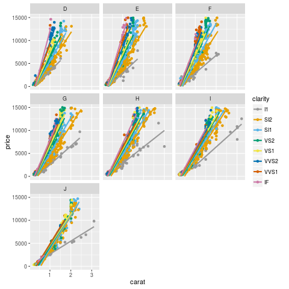

Enabling discoverability of results in R
Gabriel Becker(@groundwalkergmb), Sara Moore, Michael Lawrence
Created: 2016-08-03 Wed 12:14
1 So you have an awesome result …
1.1 That's great
No, really. Good results are hard to find.
2 Two questions
2.1 Is it reproducible?
2.2 How will someone find it?
- Your collaborators now
- You in a year
3 Let's talk Discoverability
3.1 Discoverability is
the ability to
- discover the existence of,
- locate, and
- retrieve in a useful form
Research, results, and computational artifacts
4 Super-flashy live demo time!
Note: Side-by-side R session and open RSS feed. plot a plot and see it show up 'magically' in the rss feed. Then search for a previous one and grab its code from the metadata stored in the db
5 How do we discover things now?
- Pubmed/Google Scholar/the library
- Figshare/Rpubs/Github + nbviewer
- Email authors/dig around on your hdd
6 It's all about the (meta)data
6.1 Figshare knows it
- Q: how discoverable is my research?
- A: It depends on what metadata you tag it with.
From Figshare FAQ (paraphrase)
6.2 Where does metadata come from?
6.3 That's tedious and you probably won't do it
I know
6.4 Sources of automatically inferable metadata
We can infer useful metadata about an object from the
- computing environment
- object
- script
- data being analyzed/transformed
6.5 The computing environment
- Who made the object
- When
- What packages were used/loaded
6.6 The object
R objects are necessarily self-describing
names,dim, element classes on adata.framelevelson a factor- Generally content of the object
- think
dput
- think
6.7 The code
- Perfect low-level description of
- how the object was made
- what it is
- Often strong hints of
- goal of analysis
- thoughts/assumptions of analyst
6.8 The data
What
- data was analyzed?
- aspects of the dataset were used?
- transformations were applied
7 Plots
7.1 How we make plots

7.2 Plot design/choice tells us
- What analyst thought was important
- What relationships s/he was looking for
7.3 Plots
 |
 |
7.4 Plots

7.5 Plots
|  |  |
7.6 Flipping the script

7.7 Metadata about plots
- geom/plotting function used
- vars plotted
- conditioning/grouping vars
- levels
- Titles, axis labels, legend, other text
8 Enough 'theory'! What does it do?
8.1 Store computational artifacts
In an
- Annotated
- Searchable
- Retrievable
Form
8.2 Automatically generate
Low-level semantic annotations
- Code
- Tracked automatically
- Summaries of object
9 How do can you use it?
9.1 Mostly just go about your business
library(recordr) ## ## Your analysis code here ## record(myplot)
9.2 Code tracking
- Code tracked automatically while pkg is loaded
- All recorded objects have full code-provenance
9.3 Automatically recording objects
autorecordfunction, records- all lattice/ggplot2 plots when drawn
- any object passed to
summary()
9.4 finding recorded objects
res = vtSearch("mtcars")
res2 = vtSearch("Awesome")
10 Sure, but why?
10.1 Collaboration/reporting
- RSS feed of plots/results in real time
- Searchable web frontend
- Distribution mechanism
10.2 Automatic annotation
- Plot.ly and figshare support tags
- But don't generate them!
10.3 Organizational efficiency
- Has someone in my org already studied this data?
- what did they find?
- Maybe I should collab with them.
- And vice versa
10.4 Organizational safety
- I have a result and I'm about to make $100M bet on it
- Are there 9 historical results that disagree?
10.5 Your own sanity
- Where the @$#% did I put that model/plot/etc I need for this paper?
11 History tracking
11.1 histry package
- Start tracking code you run when it is loaded
- R session or knitting documents
11.2 Demo
- History in a knitr document
12 Availability
12.1 Open source and on Github
- recordr: gmbecker/recordr
- histry: gmbecker/histry
13 Acknowledgements
- Sara Moore
- Michael Lawrence
- Biecek et al's archivist package